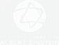
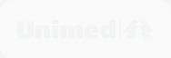
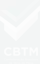

01
Avaliação estruturada
Realize avaliações cognitivas e identifique com precisão as áreas que precisam ser trabalhadas, elevando a qualidade do cuidado com decisões baseadas em dados.
Avalie, acompanhe e evolua seus pacientes com uma plataforma que combina treino cognitivo e físico, dentro e fora da clínica.
Tudo isso exige tempo. E quando esse processo não é bem estruturado, a carga horária de trabalho acaba se estendendo além do previsto.
Com o Sensorial Moove, você transforma as sessões do paciente em um programa contínuo de cuidado: atendimento presencial de forma tecnológica, interativa e estruturada, com possibilidade de extensão remota.
Você escolhe o modelo: presencial, remoto ou híbrido.
Seis frentes em que a plataforma trabalha junto com você, do diagnóstico à recorrência.
Realize avaliações cognitivas e identifique com precisão as áreas que precisam ser trabalhadas, elevando a qualidade do cuidado com decisões baseadas em dados.
Organize intervenções e sessões com atividades direcionadas, reduza o tempo operacional e aumente sua capacidade de atender mais pacientes.
Acompanhe o desempenho com indicadores claros, gere relatórios mais completos e aumente o engajamento e a permanência dos pacientes.
Reduza o tempo com organização e análise, libere sua agenda e torne seu atendimento mais escalável sem perder qualidade.
Ofereça um acompanhamento mais completo e contínuo, aumente o engajamento e fortaleça a permanência dos pacientes na sua clínica.
Estruture programas contínuos e amplie sua oferta de serviços, gerando novas oportunidades de receita com acompanhamento recorrente.
Quem confia na Sensorial





Pesquisas científicas demonstram efeitos positivos do uso da plataforma, incluindo melhora da cognição em pessoas com COVID longa.
Resultados mostram redução significativa do risco de quedas em pessoas 50+ após 15 sessões de uso.
Melhorias em atenção, tomada de decisão, controle, qualidade de vida e outros indicadores relevantes para o cuidado clínico.
Uma solução pensada para clínicas que desejam elevar a experiência presencial.
Estruture, acompanhe e escale seu atendimento além do consultório.
Seus dados são usados apenas para retornar o contato comercial. Sem spam.